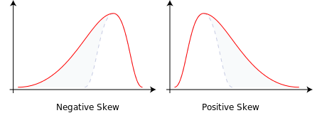
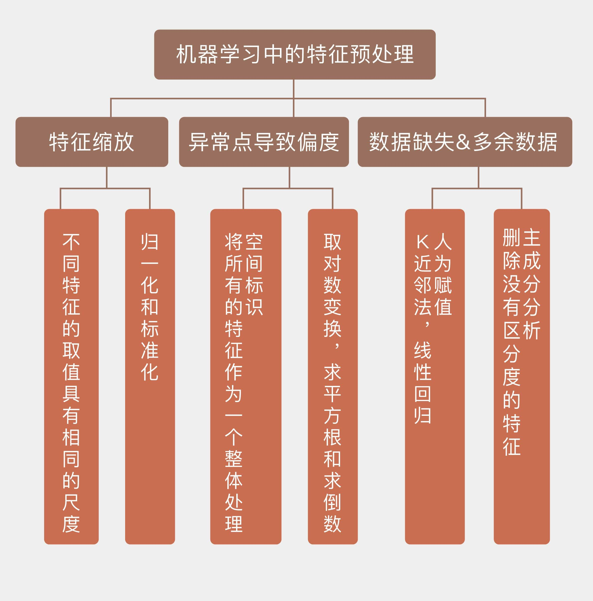

- 00 开篇词 打通修炼机器学习的任督二脉.md.html
- 01 频率视角下的机器学习.md.html
- 02 贝叶斯视角下的机器学习.md.html
- 03 学什么与怎么学.md.html
- 04 计算学习理论.md.html
- 05 模型的分类方式.md.html
- 06 模型的设计准则.md.html
- 07 模型的验证方法.md.html
- 08 模型的评估指标.md.html
- 09 实验设计.md.html
- 10 特征预处理.md.html
- 11 基础线性回归：一元与多元.md.html
- 12 正则化处理：收缩方法与边际化.md.html
- 13 线性降维：主成分的使用.md.html
- 14 非线性降维：流形学习.md.html
- 15 从回归到分类：联系函数与降维.md.html
- 16 建模非正态分布：广义线性模型.md.html
- 17 几何角度看分类：支持向量机.md.html
- 18 从全局到局部：核技巧.md.html
- 19 非参数化的局部模型：K近邻.md.html
- 20 基于距离的学习：聚类与度量学习.md.html
- 21 基函数扩展：属性的非线性化.md.html
- 22 自适应的基函数：神经网络.md.html
- 23 层次化的神经网络：深度学习.md.html
- 24 深度编解码：表示学习.md.html
- 25 基于特征的区域划分：树模型.md.html
- 26 集成化处理：Boosting与Bagging.md.html
- 27 万能模型：梯度提升与随机森林.md.html
- 28 最简单的概率图：朴素贝叶斯.md.html
- 29 有向图模型：贝叶斯网络.md.html
- 30 无向图模型：马尔可夫随机场.md.html
- 31 建模连续分布：高斯网络.md.html
- 32 从有限到无限：高斯过程.md.html
- 33 序列化建模：隐马尔可夫模型.md.html
- 34 连续序列化模型：线性动态系统.md.html
- 35 精确推断：变量消除及其拓展.md.html
- 36 确定近似推断：变分贝叶斯.md.html
- 37 随机近似推断：MCMC.md.html
- 38 完备数据下的参数学习：有向图与无向图.md.html
- 39 隐变量下的参数学习：EM方法与混合模型.md.html
- 40 结构学习：基于约束与基于评分.md.html
- 如何成为机器学习工程师？.md.html
- 总结课 机器学习的模型体系.md.html
- 总结课 贝叶斯学习的模型体系.md.html
- 结课 终有一天，你将为今天的付出骄傲.md.html
- 捐赠
10 特征预处理
华盛顿大学教授、《终极算法》（The Master Algorithm）的作者佩德罗·多明戈斯曾在Communications of The ACM第55卷第10期上发表了一篇名为《机器学习你不得不知的那些事》（A Few Useful Things to Know about Machine Learning）的小文，介绍了12条机器学习中的“金科玉律”，其中的7/8两条说的就是对数据的作用的认识。
多明戈斯的观点是：数据量比算法更重要。即使算法本身并没有什么精巧的设计，但使用大量数据进行训练也能起到填鸭的效果，获得比用少量数据训练出来的聪明算法更好的性能。这也应了那句老话：数据决定了机器学习的上限，而算法只是尽可能逼近这个上限。
但多明戈斯嘴里的数据可不是硬件采集或者软件抓取的原始数据，而是经过特征工程处理之后的精修数据，在他看来，特征工程（feature engineering）才是机器学习的关键。通常来说，原始数据并不直接适用于学习，而是特征筛选、构造和生成的基础。一个好的预测模型与高效的特征提取和明确的特征表示息息相关，如果通过特征工程得到很多独立的且与所属类别相关的特征，那学习过程就变成小菜一碟。
特征的本质是用于预测分类结果的信息，特征工程实际上就是对这些信息的编码。机器学习中的很多具体算法都可以归纳到特征工程的范畴之中，比如使用\(L_1\)正则化项的LASSO回归，就是通过将某些特征的权重系数缩小到0来实现特征的过滤；再比如主成分分析，将具有相关性的一组特征变换为另一组线性无关的特征。这些方法本质上完成的都是特征工程的任务。
但是今天，我将不会讨论这些，而是把关注点放在算法之外，看一看在特征工程之前，数据的特征需要经过哪些必要的预处理（preprocessing）。
特征缩放（feature scaling）可能是最广为人知的预处理技巧了，它的目的是保证所有的特征数值具有相同的数量级。在有些情况下，数据中的某些特征会具有不同的尺度，比如在电商上买衣服时，身高和体重就是不同尺度的特征。
假设我的身高/体重是1.85米/64公斤，而买了同款衣服的两个朋友，1.75米/80公斤的穿L号合适，1.58米/52公斤的穿S号正好。直观判断的话，L码应该更合适我。可如果把（身高，体重）的二元组看作二维空间上的点的话，代表我自己的点显然和代表S码的点之间的欧式距离更近。如果电商不开眼的话，保不齐就会把S码推荐给我。
实际上，不会有电商做出这么弱智的推荐，因为他们都会进行特征缩放。在上面的例子中，由于体重数据比身高数据高出了一个数量级，因此在计算欧式距离时，身高的影响相比于体重是可以忽略不计的，起作用的相当于只有体重一个特征，这样的算法自然就会把体重相近的划分到同一个类别。
特征缩放的作用就是消除特征的不同尺度所造成的偏差，具体的变换方法有以下这两种：
标准化（standardization）：\(x_{st} = \\dfrac{x - mean(x)}{stdev(x)}\)
归一化（normalization）：\(x_{norm} = \\dfrac{x - \\min (x)}{\\max (x) - \\min (x)}\)
不难看出，标准化的方法用原始数据减去均值再除以标准差，不管原始特征的取值范围有多大，得到的每组新数据都是均值为0，方差为1，这意味着所有数据被强行拉到同一个尺度之上；归一化的方法则是用每个特征的取值区间作为一把尺子，再利用这把尺将不同的数据按比例进行转换，让所有数据都落在[0, 1]这个范围之内。虽然实现方式不同，但两者都能够对数据做出重新标定，以避免不同尺度的特征产生不一致的影响，可谓殊途同归。
除了尺度之外，数据的偏度也是值得关注的一个问题。偏度（skewness）是用于描述概率分布非对称性的一个指标。下图给出了两个分别具有负偏度和正偏度的概率分布示意图，从中可以看出具有偏度的分布的形状都是类似的：一侧是瘦高的形状，占据了概率分布的大部分，另一侧则是比较长的拖尾。
想要理解这个图形所表示的概率分布，只要把正偏度的图形想象成你所在单位的工资分布就可以了：左侧的瘦高形状表示了拿着低工资的绝大部分普通员工，右侧的拖尾则表示了工资更高、但人数更少的中层领导和高级主管。无论机关、事业单位还是企业，工资的分布大抵都是这样。

不同偏度的概率分布（图片来自维基百科）
数据服从有偏分布意味着什么呢？意味着数据当中可能存在着异常点（outlier）。30个维秘模特的体重应该近似地服从正态分布，而正态分布是无偏的对称分布。可是如果把其中一个模特的体重换成相扑运动员的体重，这个数据集的均值就会产生明显的上升，数据的直方图也会朝新均值的反方向产生明显的偏移。这时，偏度就体现为少量异常点对样本整体的拉拽作用，类似于用一个董事长和99个普通工人计算平均工资产生的喜剧效果。
面对偏度较大的数据，第一反应就应该是检查是否有异常点存在。一般来说，如果少量数据点和其他数据点有明显区别，就可以认为是异常点。在处理异常点时，首先要检测这些数据的可靠性，判断异常取值是不是由错误或者失误导致，比如那个混进维秘模特里的相扑选手。
如果异常点本身并没有问题，需要考虑的下一个问题就是异常点和正常点是否来源于不同的生成机制，从而具有不同的概率分布。如果对异常点所在的分布的采样数据较少，就不足以体现出分布的特性，导致单个数据点看起来显得突兀。
对于像决策树这类对异常点比较敏感的算法来说，不管来源如何，异常点都需要被处理。最直接的处理办法就是将异常点移除，但当数据集容量较小时，这种一刀切的方式会进一步减少可用的数据，造成信息的丢失，这时就需要采用名为“空间标识”（spatial sign）的数值处理方法。
空间标识方法先对所有的数据点进行前面提到的标准化处理，再用样本向量的2范数对样本中的所有特征进行归一化，其数学表达式可以写成
\[ x_{ij}^\* = \\dfrac{x_{ij}}{\\sum_{j = 1}^N x_{ij}^2} \]
式中的\(N\)是数据的维度。显然，空间标识算法将所有的数据点都映射到高维空间的球面上，这个映射和标准化或者归一化的不同之处在于它处理的对象并不是所有样本的同一个特征，而是同一个样本的所有特征，让所有样本呈现一致的尺度。
当然，即使在没有异常点的情况下，数据依然可能呈现出有偏的分布，这在数字图像处理中并不罕见。有偏分布的一个明显特点是最大值和最小值之间相差较大，通常可以达到20倍或者更高。
这种数据尺度的不一致即使出现在单个特征上也不是一件好事情，对它进行修正，也就是对数据进行去偏度处理的常用方法就是取对数变换（log transformation），也就是对特征取值取对数。最大值和最小值之间的20倍差距经过对数变换后变为\(\\log_2 20 = 4.3\)，这就在一个可以接受的范围内了。除了对数之外，求平方根和求倒数也是移除偏度的常见处理方式。
异常点也好，尺度不一致的数据也好，它们至少还都是完整的数据。可有些时候，一个样本里的某些特征会压根儿没有取值，而是一片空白，这种情况被称为缺失值（missing values）。
数据缺失的可能原因多种多样，在这里就不做展开了，关键还是在于如何处理这些缺失值。最简单粗暴的办法依然是将不完整的数据全部删除，对小数据集来说这依然不是好办法。更主动的处理方式是给这些缺失值进行人为的赋值（imputation），就像数值计算或者信号处理中的插值方法一样。
人为赋值相当于在机器学习中又嵌套了一层机器学习，里层的机器学习被用于估计未知的属性值，也要使用训练数据。最常用的赋值算法是K近邻算法：选取离具有缺失值的样本最近的K个样本，并以它们对应特征的平均值为缺失值赋值。此外，线性回归也可以用来对缺失值进行拟合。但可以确定的是，不管采用什么方法，人为赋值都会引入额外的不确定性，给模型带来的性能造成影响。
会做加法也要会做减法，缺失的数据需要添加，多余的数据也要删除。在模型训练之前移除一些特征有助于增强模型的可解释性，也可以降低计算中的开销。如果两个特征之间的相关性较强，或者说具有共线性（collinearity），这时就可以删除掉其中的一个，这正是主成分分析的作用。
除此之外，如果某个特征在绝大多数数据中的取值都是相同的，那这个特征就没有存在的意义，因为它体现不出对于不同分类结果的区分度。这就像在学校里，老师给所有同学的出勤都打满分，这部分平时分是拉不开成绩差距的。
什么样的特征不具备区分度呢？这里有两个经验性的标准：一是特征取值的总数与样本数目的比例在10%以下，这样的特征在100个样本里的取值数目不超过10个；二是出现频率最高的特征取值的出现频率应该在出现频率次高的特征取值频率的20倍以上，如果有90个样本的特征取值为1，4个样本的特征取值为2，其余取值的样本数目都在4个以下，这样的特征就可以被删除了。
今天我和你分享了在模型训练之前对数据特征进行预处理的一些指导性原则，其要点如下：
特征缩放可以让不同特征的取值具有相同的尺度，方法包括标准化和归一化；
异常点会导致数据的有偏分布，对数变换和空间标识都可以去除数据的偏度；
\(k\)近邻方法和线性回归可以用来对特征的缺失值进行人为赋值；
删除不具备区分度的特征能够降低计算开销，增强可解释性。
这里介绍的特征预处理技巧可以说是挂一漏万。那么在实际的任务当中，你遇到过哪些不理想的特征数据，又是如何处理的呢？
欢迎分享你的经历。

© 2019 - 2023 Liangliang Lee. Powered by gin and hexo-theme-book.